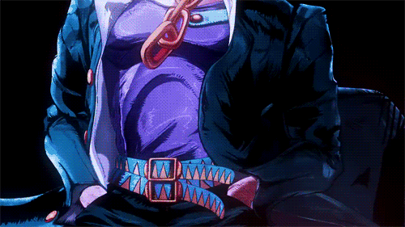
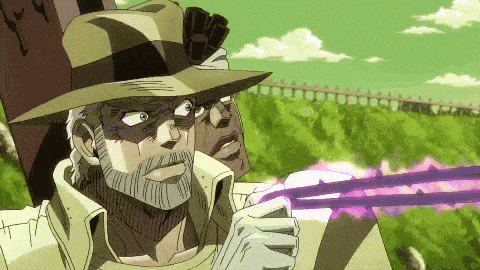
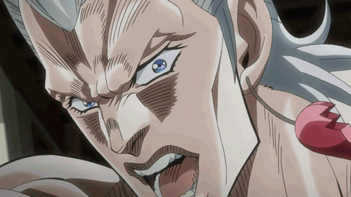
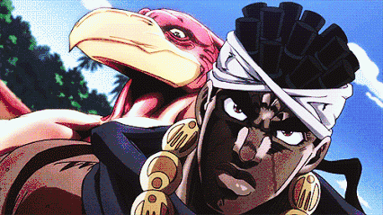
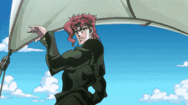
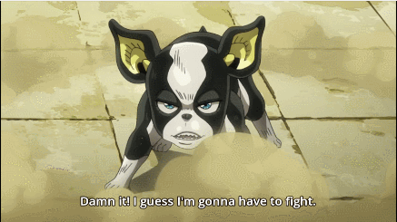

Stardust Crussaders
En esta tabla se muestran los protagonistas de la parte. Esta parte es la más recordada por los fans, ya que es la que introdujo los stands. Como los stands serán lo que más se use hasta que la obra acabe, serán nombrados junto a sus usuarios.

Jotaro Kujo y Star Platinum

Joseph Joestar y Hermit Purple

Jean Pierre Polnareff y Silver Chariot

Mohammed Avdol y Magician's Red

Kakioyin y Hierophant green

Iggy and The Fool